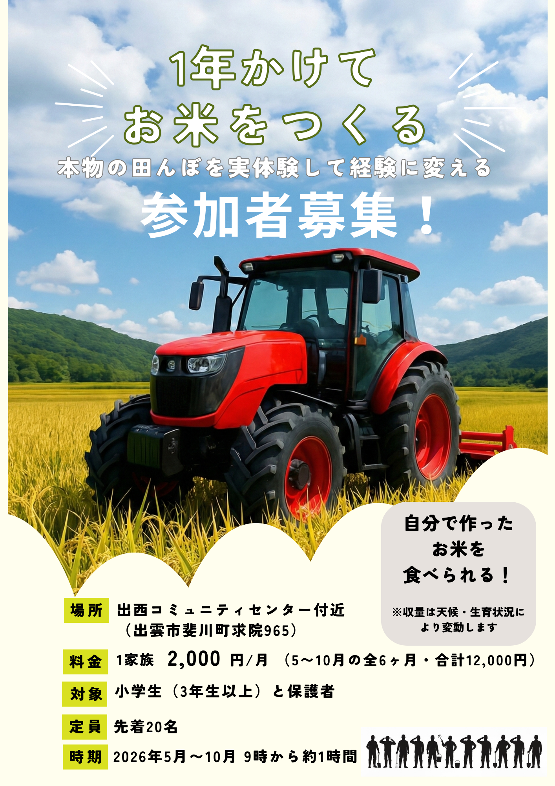

2026年度 参加者募集中
1年かけて お米をつくる
本物の田んぼを実体験して経験に変える
出雲米米クラブは、田んぼに入るところから新米を食べるところまで、 お米づくりの一年を親子で一緒に体験するクラブです。 チラシの印象そのままに、空の明るさと田んぼの力強さが伝わるLPに整えました。
自分で作ったお米を食べられる。種まきから羽釜炊きまで、家族でたどる一年です。
体験のゴール
自分たちで育てたお米を、収穫後にみんなで味わいます。

About
出雲米米クラブについて
チラシ表面の情報整理をそのままWebに移し、要点がすぐ伝わる構成にしています。
出雲市斐川町求院965
合計12,000円
9時から約1時間
スーパーに並ぶ前のお米が、どんな手順を経て育つのか。 出雲米米クラブでは、ただ収穫するだけでなく、種まきから水管理、稲の成長観察までを 農家さんの言葉を聞きながら体験していきます。
農作業そのものの楽しさはもちろん、自然や食べものへの見方が変わるのもこの活動の魅力です。 子どもにとっても、大人にとっても、「食べる」が少し特別になります。
- 本物の田んぼで、農作業の流れを実体験できます
- トラクターや農機の見学を通して、農業の裏側も学べます
- 収穫後は自分たちが育てたお米を味わう時間までつながります
Experience
このクラブでできること
裏面チラシの「実体験内容」を、やわらかい角丸カードの見せ方に寄せています。
種まき、田植え、成長確認、稲刈りなど、お米づくりの節目を親子で体験します。
作業の背景や機械の役割を知ることで、農業を立体的に理解できます。
収穫したお米は参加家族で分け合い、最後は羽釜炊きで味わう予定です。
Schedule
全9回の年間プログラム
裏面チラシのカードレイアウトを参考に、日程が一目で追える一覧にしました。
1 5/16（土）
ガイダンス
種まき
種まき
一年の流れを共有し、最初の作業として種まきを行います。
2 5/23（土）
疏通（見学）
苗管理
苗管理
苗の様子を見ながら、田植えに向けた準備を確認します。
3 5/30（土）
代かき（見学）
田んぼの土と水を整える大切な工程を見学します。
4 6/7（日）
田植え
田んぼに入って、苗を植える主役の回です。
5 6/13（土）
除草剤散布
活着確認
活着確認
苗がしっかり根付いたかを見ながら、初期管理を学びます。
6 7/11（土）
分げつ確認
中干し・走り水
中干し・走り水
成長段階に応じた田んぼの変化と水管理の意味を体験します。
7 8/1（土）
追肥
水のお話
水のお話
より良く育てるための工夫と、田んぼの水の重要性を学びます。
8 10/3（土）
稲刈り・乾燥・
もみすり（見学）
もみすり（見学）
収穫の達成感と、お米になるまでの工程を知ります。
9 10/17（土）
新米の羽釜炊き
最後はみんなで新米を味わい、一年の体験を締めくくります。
9時から10時頃の約1時間開催予定です。全日程および開催時間は天候等により変更となる場合があります。全ての日程にご参加いただかなくても問題ありません。
Flow
参加までの流れ
申し込みから初回参加まで、迷わず進められるように最小限の流れに整理しています。
Googleフォームから必要事項を入力して送信してください。
集合場所や持ち物、初回の詳細などを主催側からご案内します。
当日は長袖、長ズボン、手袋、帽子、タオルなどをご準備のうえご参加ください。
FAQ
よくある質問
チラシの注意事項をもとに、参加前に気になりやすい点を整理しています。
大丈夫です。全日程に参加できなくても問題ない前提で運営されています。
基本的には親子での参加を想定しています。小学3年生以上が対象です。
農家・スタッフが見守り、イベント保険加入予定です。危険な機械操作は子どもと行いません。
参加家族で等分する予定です。収量は天候や生育状況によって変動します。
参加申込み・お問い合わせ
定員に達し次第、募集終了となります。 参加をご希望の方は、申込みフォームからお早めにお申し込みください。